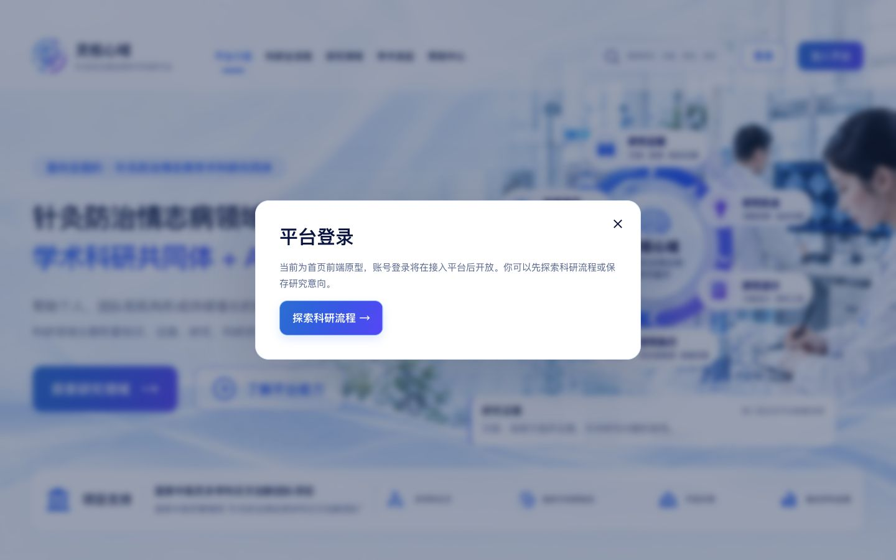
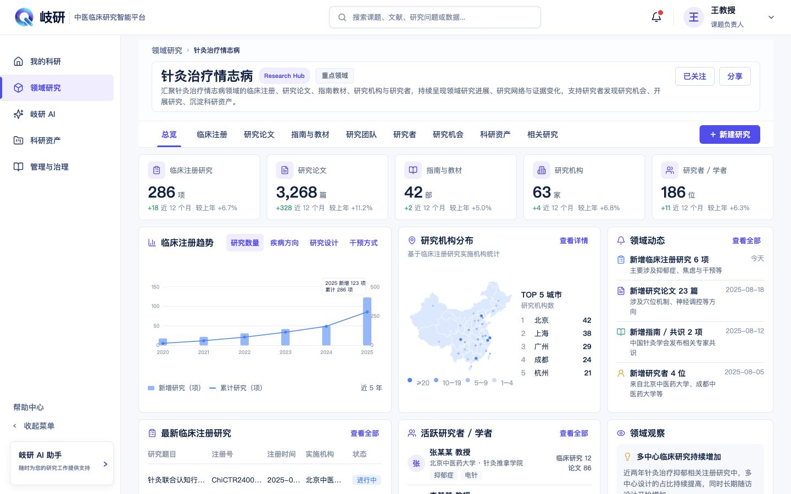
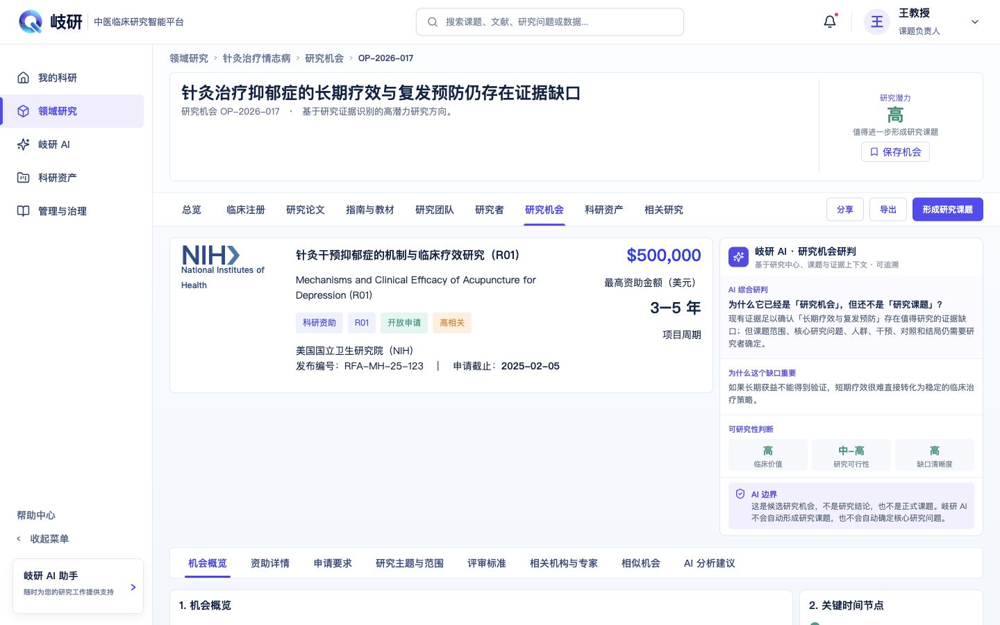
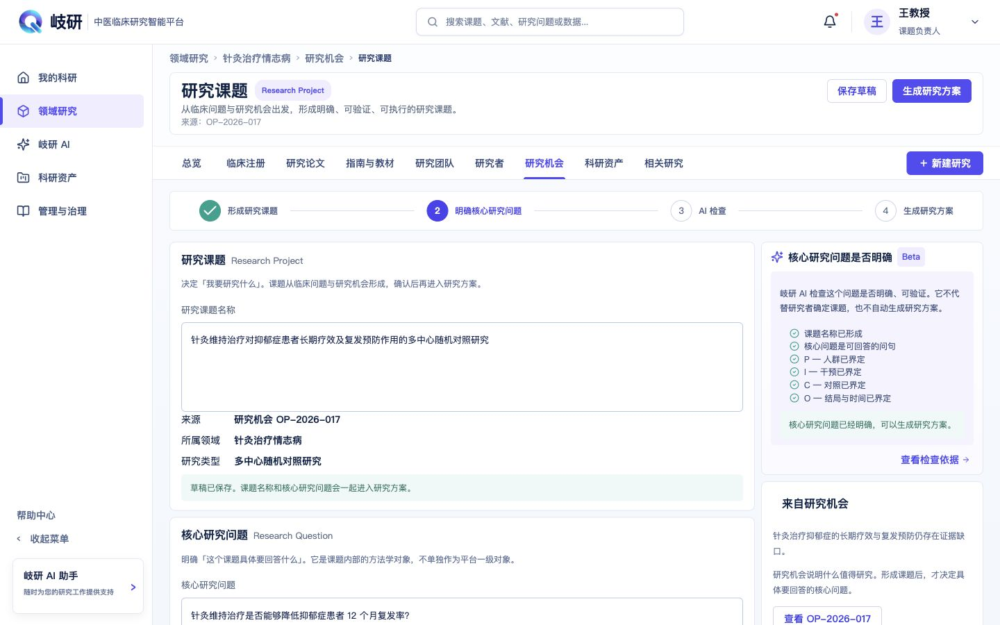
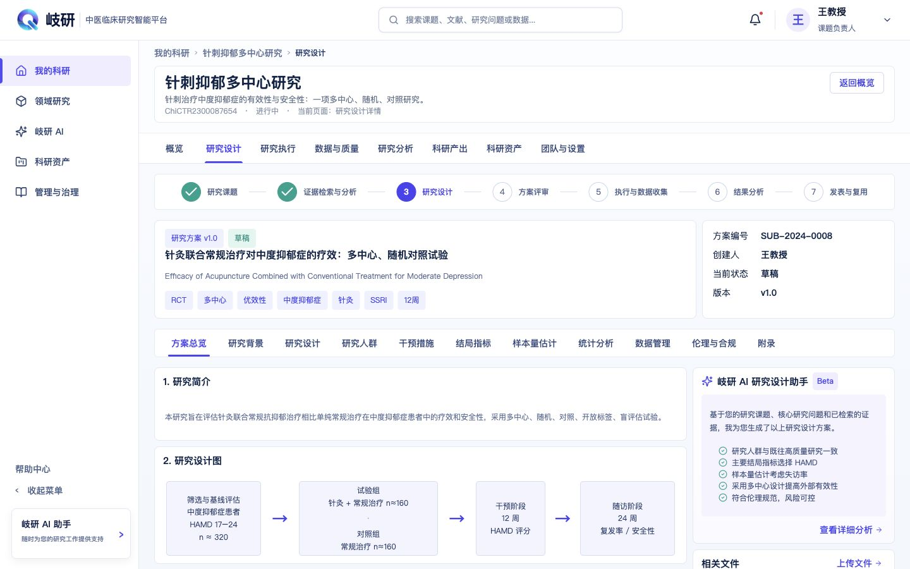
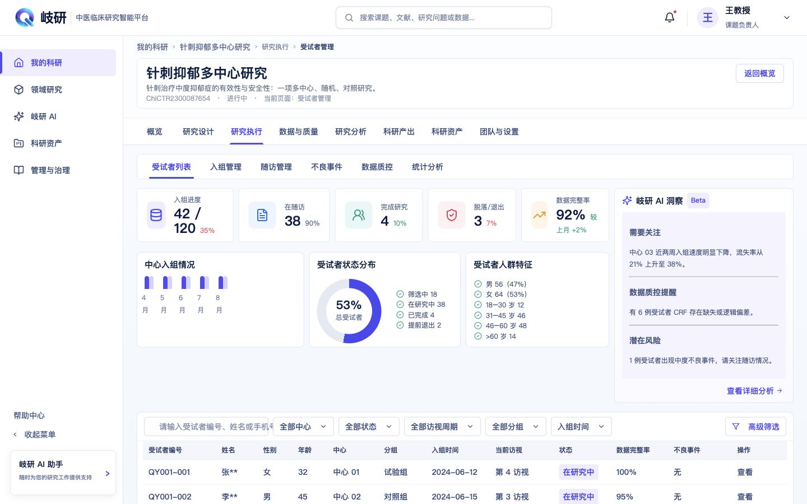
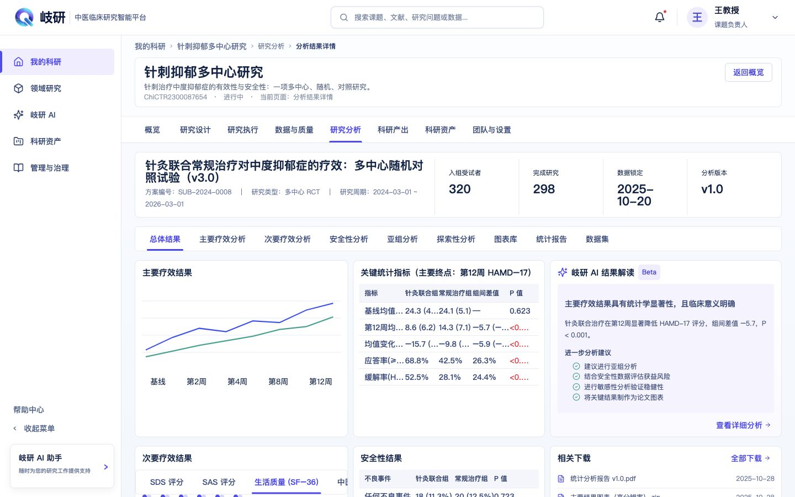
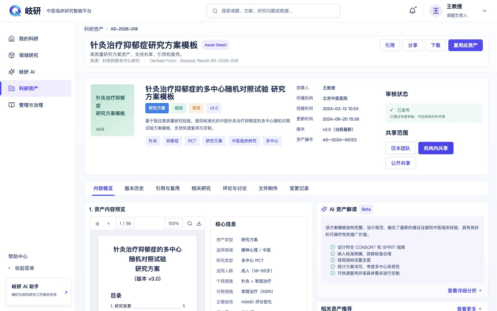

灵枢心域页面串联与功能补缺
32个页面入口已登记，核心展示链路可达；真实账号、保存、上下文、产出与复用尚未形成闭环。此地图为内部评审材料，缺失页面不会以假链接展示为已上线。
开发基准：integrated-platform · 检查日期：2026-10-14 · 完整补缺方案
按科研旅程串联
点击打开现有页面。第1步后的真实账号进入尚未实现，审查从演示工作区继续。顺序表示用户旅程，不代表已完成数据处理。
全部现有页面
32个入口
P00开放性首页
门户与个人
打开现有页面 ↗pages/p00/index.htmlP001开放性首页固化稿
门户与个人
打开现有页面 ↗pages/p001/index.htmlP002灵枢心域开放首页
门户与个人
打开现有页面 ↗pages/p002/index.htmlP01我的科研
门户与个人
打开现有页面 ↗pages/p01/index.htmlC01临床注册
临床注册
打开现有页面 ↗pages/c01/index.htmlC03试验详情
临床注册
打开现有页面 ↗pages/c03/index.htmlT01研究团队
团队与研究者
打开现有页面 ↗pages/t01/index.htmlT02团队详情
团队与研究者
打开现有页面 ↗pages/t02/index.htmlR01研究者
团队与研究者
打开现有页面 ↗pages/r01/index.htmlR02研究者详情
团队与研究者
打开现有页面 ↗pages/r02/index.htmlH01针灸治疗情志病
领域研究
打开现有页面 ↗pages/h01/index.htmlAI01岐研 AI
AI协同
打开现有页面 ↗pages/ai01/index.htmlE01研究证据
研究证据
打开现有页面 ↗pages/e01/index.htmlE02证据详情
研究证据
打开现有页面 ↗pages/e02/index.htmlE03AI 证据抽屉
研究证据
打开现有页面 ↗pages/e03/index.htmlS01课题概览
课题与研究
打开现有页面 ↗pages/s01/index.htmlS02研究设计详情
课题与研究
打开现有页面 ↗pages/s02/index.htmlS03受试者管理
课题与研究
打开现有页面 ↗pages/s03/index.htmlS04受试者详情
课题与研究
打开现有页面 ↗pages/s04/index.htmlS05数据质量详情
课题与研究
打开现有页面 ↗pages/s05/index.htmlS06研究分析结果
课题与研究
打开现有页面 ↗pages/s06/index.htmlQ01研究课题
课题与研究
打开现有页面 ↗pages/q01/index.htmlG01人工审查与审批
管理与治理
打开现有页面 ↗pages/g01/index.htmlG02管理与治理
管理与治理
打开现有页面 ↗pages/g02/index.htmlO01研究机会
研究机会
打开现有页面 ↗pages/o01/index.htmlO02研究机会详情
研究机会
打开现有页面 ↗pages/o02/index.htmlA01科研资产
科研资产
打开现有页面 ↗pages/a01/index.htmlA02资产详情与复用
科研资产
打开现有页面 ↗pages/a02/index.htmlH02创建 Research Hub · 基本信息
领域研究
打开现有页面 ↗pages/h02/index.htmlH03创建 Research Hub · 研究范围
领域研究
打开现有页面 ↗pages/h03/index.htmlH04创建 Research Hub · AI 检查与确认
领域研究
打开现有页面 ↗pages/h04/index.htmlH05领域研究
领域研究
打开现有页面 ↗pages/h05/index.html C02仅为C01地图的历史重定向，未登记构建入口；不计入32个页面，也不当成缺失业务页。P001为历史对照。
推荐补缺顺序
M0 连接基础
统一对象ID、返回与筛选；消除假保存和无反馈入口。
M1 用户与门户
登录注册、身份资料、学术发起、帮助、会话与授权。
M2 课题与方案
课题列表、草稿持久化、方案编辑版本与专家审批。
M3 执行与数据
任务、团队、访视采集、质控与分析任务。
M4 成果与复用
科研产出→发布资产→按权限复用到下一课题。
M5 辅助与治理
指南、相关研究、搜索通知与确认范围内的治理和AI任务。
本次实际验证的八步截图
1 门户进入 · 阻断：真实登录未接入
点击登录显示原型说明；账号注册与会话尚未闭环。

2 领域研究 · 可达，部分标签缺能力
领域研究可进入；指南教材、相关研究仅派发事件。

3 研究机会 · 可达，缺对象上下文
O01可进入机会详情；形成课题未携带真实机会ID。

4 形成课题 · 保存反馈与能力不符
保存仅更新setSaved标记；刷新与跨页不能依赖该反馈。

5 研究方案 · 可达，课题内容未继承
上一页维持治疗课题变为固定联合治疗方案。

6 研究执行 · 展示已有，采集闭环待补
任务、访视与CRF保存不能用受试者列表替代。

7 分析与产出 · 产出入口断开
点击科研产出仍留在S06，需要成果管理与资产沉淀。

8 资产复用 · 复用入口断开
点击复用没有完成选择目标、权限确认和来源保留流程。

截图展示当前前端；源码用于核对存储、事件和路由。不据此宣称后端已缺失、全量业务已测试或无障碍已合规。